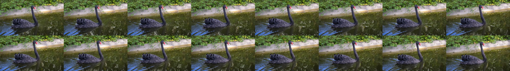

Everything to know about video-in / video-out models: the two halves of the task (generative editing and restoration), why temporal coherence is the whole problem, the mid-2026 model landscape, the two metrics you must always report together, and runnable code that makes per-frame flicker visible and then fixes it.
Author
Benedict Thekkel
1. What is Video-to-Video?
Video-to-video (V2V) takes a video in and emits a video out. That is the only thing every V2V system has in common - the umbrella covers two worlds that share almost no engineering.
Input. A clip as a tensor of shape [T, H, W, 3] (frames x height x width x RGB), usually decoded to a list of PIL images or a uint8 numpy array. Optional side inputs: a text prompt (what to change), a mask (where to change), a control signal per frame (canny edges, depth, pose), or a reference image (the identity to insert).
Output. Another clip, [T', H', W', 3]. T' > T for frame interpolation, H',W' > H,W for super-resolution, T'=T for editing/restyling, and an extra alpha channel for matting.
Family
Sub-task
What it does
Typical model class
Generative
Restyling / prompt-driven editing
“make it a Van Gogh painting”, “turn the swan into a flamingo”
latent diffusion + temporal layers
Generative
Character / object swap
Replace a subject, keep the motion
reference-conditioned DiT (VACE, Lucy Edit)
Generative
Video inpainting / object removal
Fill a masked region coherently over time
masked V2V
Generative
Motion transfer
Drive a new subject with a source pose sequence
pose ControlNet + video model
Generative
Video ControlNet
Depth/canny/pose conditioned regeneration
ControlNet-style adapters
Restoration
Super-resolution (VSR)
Upscale, deblur, remove compression artifacts
SwinIR/Swin2SR, BasicVSR++, SeedVR2
Restoration
Denoising / deblurring
Clean up sensor noise, motion blur
recurrent CNN / DiT
Restoration
Frame interpolation (VFI)
24 fps -> 60 fps, slow motion
RIFE, FILM, EMA-VFI
Restoration
Colourisation, old-film restoration
Scratch/flicker removal, B&W -> colour
hybrid restoration stacks
Restoration
Matting / background removal
Per-pixel alpha over time
RVM, MatAnyone
The generative half gets the papers; the restoration half is commercially much larger - every phone camera, every streaming CDN, every TV upscaler and every video-conferencing background blur is a video-to-video model in production. A third, quieter branch is video-to-video translation for simulation: turning a rendered/segmented game or sim frame sequence into photorealistic footage (NVIDIA’s original GAN vid2vid, and today Cosmos-Transfer for robotics/AV sim2real), and its mirror image, the 2025-2026 real-time world/game-frame generators (Decart’s Oasis, MirageLSD at ~20 fps with ~100 ms latency) that generate the next frame conditioned on the previous frame plus a control signal.
Neighbouring tasks (separate notebooks in this directory):
Task
Relation
Notebook
Image-to-image
The per-frame analogue - V2V is this plus a time axis
06_Image_to_Image
Image-to-video
One frame in, a clip out (animation)
07_Image_to_Video
Text-to-video
No video input at all
10_Text_to_Video
Video classification
Video in, a label out (not a video)
09_Video_Classification
Image segmentation / mask generation
Produces the masks that drive masked V2V
03_Image_Segmentation, 12_Mask_Generation
Depth estimation
Produces the per-frame control signal for structure-preserving edits
00_Depth_Estimation
Diffusion fundamentals (latents, schedulers, strength, guidance) are covered in 06_Image_to_Image and 10_Text_to_Video and are not re-derived here.
2. Real-World Use Cases
Use case
Domain
Consumes / produces
Dominant constraint
TV / monitor upscaling
Consumer hardware (NVIDIA RTX Video Super Resolution, Samsung AI Upscaling)
480p-1080p stream -> 4K, live
Hard real-time on a fixed silicon budget; zero flicker is non-negotiable
Cost per hour of footage; must not “invent” detail the director did not shoot
Slow motion / fps up-conversion
Phones, sports broadcast, VFX
30 fps -> 120/240 fps
Artefacts on fast motion and occlusions; sub-frame latency on device
Background removal / virtual background
Video conferencing (Zoom, Meet, Teams)
Webcam feed -> RGBA matte
CPU-only real-time, no green screen, stable hair/edges
Restyling and look development
Advertising, social filters (Runway, Decart Mirage)
Clip + prompt -> restyled clip
Identity/motion preservation; increasingly live (~100 ms/frame)
Object removal / continuity fixes
Post-production VFX
Clip + mask -> clean plate
Pixel-exact stability over hundreds of frames; a human reviews every frame
Virtual try-on and product video
E-commerce
Clip + garment reference -> edited clip
Garment fidelity; cheap enough to run per SKU
Sim2real for robotics / AV
Autonomous systems (NVIDIA Cosmos-Transfer)
Rendered sim or segmentation video -> photorealistic video
Physical plausibility; throughput (millions of training frames)
Archive restoration
Broadcasters, film archives
Scanned B&W film -> colourised, deflickered, 4K
Faithfulness to the original; the model must not hallucinate faces
What the benchmark number hides. A V2V leaderboard score is measured on a 3-second, 480p, centre-framed clip with one moving subject. Production video is 10 minutes long, and the two things that kill a deployment are the ones a short clip cannot expose: drift (the style, colour or identity slowly slides over hundreds of frames, because the model only ever attends over a 16-frame window) and flicker (high-frequency instability that is barely visible frame-by-frame and unwatchable at 24 fps). Then there is the compute wall: editing is T times an image edit, so a 3-second demo that takes 4 minutes on a 3060 becomes 80 minutes for a 60-second ad. Streaming/live V2V is a different architecture, not a faster setting - it must be causal (frame t may only see frames <= t), which rules out every bidirectional temporal-attention model in section 6. And in restoration, the failure that gets a system pulled from production is not a lower PSNR but a hallucinated detail: an upscaler that invents a licence plate, a face, or a word of text that was never in the source.
3. How Modern Video-to-Video Works
Everything in V2V orbits one problem: temporal coherence.
Run a per-frame image edit over a clip and it flickers, badly. The reason is structural, not a tuning bug. A diffusion model is not a continuous function of its input: each frame is denoised from its own noise sample, and the mapping from (latent, noise) to image is extremely sensitive - two visually identical input frames can land in different modes of the output distribution. So the texture of the brushstrokes, the colour of a shirt, the shape of a cloud all resample every 1/24 of a second. The fixes, in increasing order of sophistication:
(a) Fix the noise / seed across frames (2022). Use the same generator seed, or invert the source frames to a shared noise (DDIM inversion). Cheap, and it helps a little - it removes the independent-sample component of the jitter but not the sensitivity to input change. This is the free win, and it is why the naive cell in section 9 fixes the seed and still flickers.
(b) Cross-frame / extended attention (2023). Replace self-attention in the UNet with attention over the concatenation of the current frame and a shared anchor frame (usually frame 0), so every frame is generated “in the style of” the same reference. Training-free. Text2Video-Zero, FateZero, Pix2Video, Tune-A-Video. Big improvement in appearance stability, still weak on fine texture.
(c) Optical-flow warping and propagation (2023-2024). Edit a few keyframes properly, then propagate the edit to the in-between frames by warping along optical flow (Rerender-A-Video, EbSynth-style propagation), or enforce that features which correspond across frames stay equal (TokenFlow, which propagates diffusion features along inter-frame correspondences). This is the strongest zero-shot family: coherence is inherited from the source video’s own motion, so it cannot drift. It fails exactly where flow fails - occlusions, fast motion, new content entering the frame.
(d) Latent / feature blending across frames (2023-2024). Blend or average latents of neighbouring frames during denoising, or share the KV cache. Cheap smoothing; overdo it and the video goes soft and ghosted.
(e) Native temporal layers - the current answer (2023-2026). Put time inside the model. AnimateDiff (2023) inserts a trained motion module (temporal 1-D attention across the frame axis) into a frozen SD 1.5 UNet - the whole clip is denoised jointly, so coherence is learned, not bolted on. Modern video DiTs (CogVideoX, Wan 2.1/2.2, LTX-Video, HunyuanVideo) go further: full 3-D spatio-temporal attention over a causal video VAE’s spacetime latents. On top of these sit the 2025-2026 unified editors - VACE (one Wan-based model that does reference-to-video, masked V2V, and control-video V2V through a single “video condition unit”) and Lucy Edit (prompt-driven editing on Wan2.2-5B) - and the control-video translators (Cosmos-Transfer2.5).
Cheat sheet:
Approach
Coherence
Cost
Needs training
Example
Per-frame img2img + fixed seed
poor (flickers)
1x image cost per frame
no
SD 1.5 img2img (section 9)
+ ControlNet (canny/depth)
fair - structure holds, texture flickers
~1.4x
no
ControlNet img2img (section 10)
Cross-frame attention
good on global appearance
~1.5x
no
Text2Video-Zero, FateZero
Flow propagation / feature correspondence
very good; inherits source motion
keyframes + cheap warps
no
TokenFlow, Rerender-A-Video
Native temporal layers (motion module)
very good
whole clip denoised jointly
yes (pretrained)
AnimateDiff V2V (section 11)
Video DiT with 3-D attention
best
very high (attention is O(T^2 HW))
yes (pretrained)
Wan-VACE, CogVideoX, Lucy Edit
The restoration half followed the same arc - per-frame SwinIR -> recurrent propagation with flow alignment (BasicVSR++) -> diffusion transformers (SeedVR2, 2025-2026, one-step restoration at arbitrary resolution) - and it hits the same wall: a per-frame restoration model flickers too (section 12 makes that measurable).
4. Evaluation Metrics
This is a two-metric task, and reporting one number alone is meaningless. You must always report what changed and how stably it changed.
1. Edit / target quality.
Restyling (no ground truth): CLIP text alignment - cosine similarity between the CLIP embedding of each output frame and of the target prompt, averaged over frames: \[\text{CLIP}_{\text{text}} = \frac{1}{T}\sum_{t=1}^{T} \cos\big(E_I(x_t),\, E_T(p)\big)\]
Restoration / interpolation (ground truth exists): PSNR, SSIM, LPIPS. \[\text{PSNR} = 10\,\log_{10}\frac{\text{MAX}^2}{\text{MSE}}\] PSNR rewards blur (a blurry frame has low MSE), so pair it with LPIPS (a learned perceptual distance) which does not.
2. Temporal consistency.
Frame-to-frame embedding similarity (CLIP or DINO), the standard “consistency” number in video-editing papers: \[C = \frac{1}{T-1}\sum_{t=1}^{T-1} \cos\big(E_I(x_t),\, E_I(x_{t+1})\big)\]
Warping error - the honest one. Estimate optical flow \(F_{t \to t+1}\) on the source video, warp output frame \(x_t\) into frame \(t+1\), and measure the residual inside the valid (non-occluded) region \(M\): \[E_{\text{warp}} = \frac{1}{T-1}\sum_{t=1}^{T-1} \frac{\lVert M \odot (x_{t+1} - \mathcal{W}(x_t, F_{t \to t+1}))\rVert_1}{\lVert M \rVert_1}\] Unlike the cosine metric, this asks the right question: given how the scene actually moved, is the output what it should be? Lower is better.
VBench / VBench-2.0 decompose quality into 16+ automated dimensions, of which temporal flickering, motion smoothness and subject/background consistency are the V2V-relevant ones. VBench-2.0 (2026) adds intrinsic-faithfulness dimensions (physics, commonsense, controllability).
The degenerate optima - read this before you trust any consistency number.
A model that returns the input unchanged scores a perfect temporal consistency and warping error, and zero edit fidelity.
A model that outputs a single frozen frame repeated T times also scores perfect consistency (and near-perfect motion smoothness), while destroying the video entirely.
So temporal consistency is only interpretable jointly with edit fidelity, and any paper reporting a single “consistency” column is hiding the trade-off. In section 14 we plot the two axes against each other and mark both degenerate points explicitly; a good model is the one pushed to the top-right, not the one at the top.
Speed. Report seconds per frame (and VRAM). Video cost scales linearly with T on top of an already heavy per-frame cost, so s/frame is the number that tells you whether a 60-second clip is 2 minutes or 2 hours.
Benchmarks by sub-task: LOVEU-TGVE and DAVIS-Edit / FiVE for text-guided editing; Vimeo-90K (triplet PSNR/SSIM) and X4K1000FPS for interpolation; REDS, Vid4 and UDM10 for video super-resolution; VBench-2.0 for generative video quality.
The cell below implements frame-to-frame consistency (pixel-space), warping error and PSNR on three synthetic clips - a clean moving square, the same clip with per-frame noise (flickery), and a frozen clip - and shows that the three metrics rank them differently, which is the whole point.
import numpy as npfrom IPython.display import displayfrom PIL import Imagetry:import cv2 # optical flow (Farneback) + canny; see the install cell in section 7 HAS_CV2 =TrueexceptImportError: HAS_CV2 =Falseprint("opencv not installed: warping error will fall back to a no-flow estimate")rng = np.random.default_rng(0)T, H, W =12, 96, 128def moving_square_clip(t_frames=T, noise=0.0, frozen=False):"Synthetic clip: a white square translating across a grey background." frames = []for t inrange(t_frames): f = np.full((H, W, 3), 40, dtype=np.float32) x =8if frozen else8+6* t # frozen clip: the square never moves f[36:60, x:x +24] =220if noise: # per-frame i.i.d. noise = flicker f = f + rng.normal(0, noise, f.shape) frames.append(np.clip(f, 0, 255).astype(np.uint8))return framesdef psnr(a, b):"Peak signal-to-noise ratio between two uint8 clips (list of HxWx3 arrays)." mse = np.mean([(x.astype(np.float32) - y.astype(np.float32)) **2for x, y inzip(a, b)])returnfloat("inf") if mse ==0else10.0* np.log10(255.0**2/ mse)def frame_consistency(frames):"Mean cosine similarity between consecutive frames in raw pixel space (1.0 = identical)." v = [f.astype(np.float32).ravel() for f in frames] sims = [float(np.dot(a, b) / (np.linalg.norm(a) * np.linalg.norm(b) +1e-8))for a, b inzip(v[:-1], v[1:])]returnfloat(np.mean(sims))def warp_error(out_frames, src_frames):"Mean L1 residual after warping output frame t into t+1 along the SOURCE optical flow."ifnot HAS_CV2:returnfloat("nan")# The flow grid is built from the source, but not every model emits the source# resolution (AnimateDiff defaults to square), so put the outputs on the source raster. sh, sw = src_frames[0].shape[:2]if out_frames[0].shape[:2] != (sh, sw): out_frames = [cv2.resize(f, (sw, sh), interpolation=cv2.INTER_AREA) for f in out_frames] errs = []for t inrange(len(out_frames) -1): g0 = cv2.cvtColor(src_frames[t], cv2.COLOR_RGB2GRAY) g1 = cv2.cvtColor(src_frames[t +1], cv2.COLOR_RGB2GRAY) flow = cv2.calcOpticalFlowFarneback(g0, g1, None, 0.5, 3, 15, 3, 5, 1.2, 0) h, w = flow.shape[:2] grid = np.stack(np.meshgrid(np.arange(w), np.arange(h)), axis=-1).astype(np.float32) m = (grid + flow) # where each pixel of frame t lands in frame t+1 mx = np.ascontiguousarray(m[..., 0], dtype=np.float32) my = np.ascontiguousarray(m[..., 1], dtype=np.float32) warped = cv2.remap(out_frames[t], mx, my, cv2.INTER_LINEAR) valid = (m[..., 0] >=0) & (m[..., 0] < w) & (m[..., 1] >=0) & (m[..., 1] < h) d = np.abs(warped.astype(np.float32) - out_frames[t +1].astype(np.float32)).mean(-1) errs.append(float(d[valid].mean() /255.0))returnfloat(np.mean(errs))clean = moving_square_clip()flicker = moving_square_clip(noise=18.0) # the naive per-frame edit, in caricaturefrozen = moving_square_clip(frozen=True) # the degenerate "perfectly consistent" outputtoy = {}for name, clip in [("clean (ideal)", clean), ("flickery", flicker), ("frozen (degenerate)", frozen)]: toy[name] =dict( psnr=psnr(clip, clean), # fidelity to the ground-truth clip consistency=frame_consistency(clip), # frame-to-frame cosine (higher = smoother) warp_err=warp_error(clip, clean), # residual along the true motion (lower = better) ) r = toy[name]print(f"{name:22s} PSNR {r['psnr']:6.2f} dB consistency {r['consistency']:.4f} warp_err {r['warp_err']:.4f}")display(Image.fromarray(np.concatenate([clean[6], flicker[6], frozen[6]], axis=1)))
clean (ideal) PSNR inf dB consistency 0.8999 warp_err 0.0330
flickery PSNR 23.12 dB consistency 0.8290 warp_err 0.1082
frozen (degenerate) PSNR 14.32 dB consistency 1.0000 warp_err 0.0054
from pyecharts import options as optsfrom pyecharts.charts import Barnames =list(toy)bar = ( Bar() .add_xaxis(names) .add_yaxis("PSNR vs ground truth (dB, higher=better)", [round(toy[n]["psnr"], 2) if np.isfinite(toy[n]["psnr"]) else60.0for n in names]) .add_yaxis("frame-to-frame consistency x100 (higher=smoother)", [round(100* toy[n]["consistency"], 2) for n in names]) .add_yaxis("warping error x100 (lower=better)", [round(100* toy[n]["warp_err"], 2) for n in names]) .set_global_opts( title_opts=opts.TitleOpts( title="Three metrics, three different rankings", subtitle="The frozen clip wins on consistency and loses on everything that matters", ), yaxis_opts=opts.AxisOpts(name="score"), tooltip_opts=opts.TooltipOpts(trigger="axis"), legend_opts=opts.LegendOpts(pos_top="12%"), ))bar.render_notebook()
This notebook evaluates on a single DAVIS clip (blackswan, 480p, 50 frames, ungated, ~1.4 MB) downloaded from the mp4 mirror above into DATA_DIR. It is the clip every video-editing paper shows, it has real camera and subject motion, and 16 frames of it fit in a 12 GB card. DAVIS is CC BY-NC 4.0 - fine for research and for this notebook, not for a commercial product. Nothing here is gated.
6. The Model Landscape (mid-2026)
There is no single V2V leaderboard, because the task is not single. The two authorities are VBench / VBench-2.0 (generative video quality, including temporal flickering and motion smoothness) and, for restoration, the per-dataset PSNR/LPIPS tables on REDS / Vid4 / Vimeo-90K. The Hugging Face video-to-video task page tracks the current open editors.
Who wins what.Quality: Wan2.1-VACE-14B and Lucy Edit for generative editing, SeedVR2 for restoration - and none of them run here. Quality per GB: AnimateDiff V2V on SD 1.5, which is exactly why it is the temporally-aware model this notebook runs. Speed: per-frame img2img is the fastest thing that produces anything, and it is unusable for video because of flicker - the entire point of section 14. Latency: only causal models (MirageLSD-style) can stream; every model above with bidirectional temporal attention sees the whole clip at once and therefore cannot.
Tying back to section 2: the TV-upscaler and video-call constraints (hard real-time, fixed silicon) exclude every diffusion row in this table - those products run small causal CNNs. The post-production and advertising constraints (quality, a human in the loop) are exactly where the 5-14B DiTs live.
7. Setup
Every runnable model here loads through Hugging Face transformers or diffusers - no vendor packages. Package roles:
transformers - Swin2SR (super-resolution) and CLIP (both metrics)
opencv-python - optical flow (warping error), canny edges for ControlNet, the webcam demo
imageio + imageio-ffmpeg - decoding the DAVIS mp4 (diffusers.utils.load_video uses imageio for video; GIFs go through PIL)
pyecharts - all charts
pandas - the benchmark table
The 12 GB budget. A video-to-video pass is an image-to-image pass repeated T times, so VRAM and wall-clock both scale with the frame count - and AnimateDiff denoises all frames jointly, so the activations scale with T too. Everything below is deliberately small: 16 frames at 512x288, fp16, 20-25 steps, with enable_model_cpu_offload() (keeps only the active submodule on the GPU), vae.enable_slicing() (decodes the batch one frame at a time) and vae.enable_tiling(). With those on, peak VRAM stays around 5-7 GB. Expected wall-clock on an RTX 3060: ~40-60 s for the 16-frame per-frame SD pass, ~1.5 min with ControlNet, and ~3-5 min for AnimateDiff V2V. Raise N_FRAMES at your own risk - it is linear.
All downloads (the DAVIS clip, HF weights, output GIFs) land in DL_tasks/datasets/, which is gitignored.
# Runnable models load through diffusers + transformers only.# %pip install -q torch diffusers transformers accelerate safetensors# %pip install -q opencv-python imageio imageio-ffmpeg pyecharts pandas# Not used here, but the usual companions for real V2V work:# controlnet-aux (pose/depth pre-processors), av (PyAV decoding)
import ctypesimport ctypes.utilimport gcimport timeimport urllib.requestfrom pathlib import Pathimport torchfrom dotenv import find_dotenv, load_dotenv# Knowledge/.env sets HF_TOKEN - authenticated HF Hub requests get higher rate limitsload_dotenv(find_dotenv(usecwd=True))device ="cuda:0"if torch.cuda.is_available() else"cpu"dtype = torch.float16 if device !="cpu"else torch.float32if device !="cpu":print(torch.cuda.get_device_name(0))print("device:", device, "dtype:", dtype)def vram(tag=""):"Report current GPU memory (allocated / reserved). No-op on CPU."if torch.cuda.is_available(): alloc = torch.cuda.memory_allocated() /1e9 reserved = torch.cuda.memory_reserved() /1e9print(f"VRAM {tag:20s}{alloc:5.2f} GB allocated / {reserved:5.2f} GB reserved")def free_memory():"Collect garbage, empty the CUDA cache, and return freed CPU RAM to the OS." gc.collect()if torch.cuda.is_available(): torch.cuda.empty_cache() torch.cuda.ipc_collect()# glibc keeps freed CPU allocations in its arenas instead of returning them# to the OS, so RSS compounds across model sections (cpu-offloaded weights# live in system RAM). malloc_trim(0) hands the freed arenas back. See# dl-visualization-and-memory.instructions.md - not optional on a 12 GB box.try: ctypes.CDLL(ctypes.util.find_library("c") or"libc.so.6").malloc_trim(0)exceptException:passdef offload(pipe):"Pick the offload strategy for the VRAM actually free right now, not the card size."if device =="cpu":return pipeimport torch.nn as nn# bitsandbytes-quantized weights are pinned to the GPU; enable_sequential_cpu_offload# first moves the whole pipeline to CPU and STALLS on them (a hang, not a catchable# error), so a quantized pipeline must use model-level offload - the recommended path. quantized =any(getattr(m, "is_quantized", False)for m in pipe.components.values() ifisinstance(m, nn.Module)) free_gb = torch.cuda.mem_get_info()[0] /1e9# global free VRAM - counts other processesif free_gb <8.0andnot quantized:# Another process is using the card (or it is small): layer-at-a-time keeps the# peak at ~1-2 GB for a real speed cost. Free the other GPU user if you can -# check nvidia-smi on the HOST; a container only sees its own processes.# Quantized (bitsandbytes) components cannot be dispatched per-layer, so fall# back to model-level offload if sequential raises.try: pipe.enable_sequential_cpu_offload(device=device)print(f"offload: sequential ({free_gb:.1f} GB VRAM free - GPU busy, expect slow steps)")return pipeexceptExceptionas e:print(f"offload: sequential unsupported here ({type(e).__name__}) - using model-level")# Whole submodule on the GPU at a time - fast, peak ~= largest submodule (~5 GB). pipe.enable_model_cpu_offload(device=device)print(f"offload: {'quantized -> 'if quantized else''}model-level ({free_gb:.1f} GB VRAM free)")return pipe# All downloads go to DL_tasks/datasets/ (gitignored)DATA_DIR = Path("../../datasets")DATA_DIR.mkdir(exist_ok=True)HF_CACHE =str(DATA_DIR /"hf_cache")# The DAVIS "blackswan" clip (480p, 50 frames, ~1.4 MB) - the standard video-editing test clipCLIP_PATH = DATA_DIR /"davis_blackswan.mp4"ifnot CLIP_PATH.exists(): urllib.request.urlretrieve("https://huggingface.co/datasets/emirkisa/DAVIS-2017-480p-mp4/resolve/main/blackswan_raw_24fps.mp4", CLIP_PATH, )print(CLIP_PATH, f"{CLIP_PATH.stat().st_size /1e6:.1f} MB")
from diffusers.utils import load_video# Keep the clip small: 16 frames at 512x288 (both divisible by 8, as SD's VAE requires).N_FRAMES, SIZE =16, (512, 288)PROMPT ="a swan made of polished bronze, ornate metal sculpture, glowing sunset light"NEG_PROMPT ="blurry, low quality, distorted, watermark"SEED =42src_frames = load_video(str(CLIP_PATH)) # needs imageio + imageio-ffmpeg for mp4src_frames = [f.convert("RGB").resize(SIZE) for f in src_frames[:N_FRAMES]]src_np = [np.array(f) for f in src_frames] # uint8 arrays, reused by every metricprint(f"{len(src_frames)} frames, {src_frames[0].size}")def contact_sheet(frames, cols=8, scale=0.5):"Tile frames into one static image so the rendered docs show something, not just a GIF." w, h =int(frames[0].width * scale), int(frames[0].height * scale) rows = (len(frames) + cols -1) // cols sheet = Image.new("RGB", (cols * w, rows * h), "black")for i, f inenumerate(frames): sheet.paste(f.resize((w, h)), ((i % cols) * w, (i // cols) * h))return sheet# Every model in this notebook gets scored on these same frames, prompt and seed.RESULTS = {} # name -> {"frames": [...], "seconds": float}display(contact_sheet(src_frames))
16 frames, (512, 288)

8. The Metrics We Will Actually Use
Both metrics ride on one CLIP model (openai/clip-vit-base-patch32, 151M params, ~0.3 GB in fp32) - the same encoder gives us edit fidelity (image-vs-prompt cosine) and temporal consistency (frame-vs-next-frame cosine). It is small enough to keep resident for the whole notebook alongside a 0.9B SD pipeline; we free it at the very end.
warp_error from section 4 is reused unchanged - it needs no model, only the source clip’s optical flow. Note the direction of each metric: CLIP text alignment up, frame-to-frame consistency up, warping error down.
from transformers import CLIPModel, CLIPProcessorclip_id ="openai/clip-vit-base-patch32"clip_proc = CLIPProcessor.from_pretrained(clip_id, cache_dir=HF_CACHE)clip_model = CLIPModel.from_pretrained(clip_id, cache_dir=HF_CACHE).to(device).eval()@torch.inference_mode()def clip_image_embeds(frames):"L2-normalised CLIP image embeddings for a list of PIL frames -> [T, 512] on CPU." inputs = clip_proc(images=frames, return_tensors="pt").to(device) e = clip_model.get_image_features(**inputs).pooler_outputreturn torch.nn.functional.normalize(e, dim=-1).float().cpu()@torch.inference_mode()def clip_text_embed(prompt):"L2-normalised CLIP text embedding -> [1, 512] on CPU." inputs = clip_proc(text=[prompt], return_tensors="pt", padding=True).to(device) e = clip_model.get_text_features(**inputs).pooler_outputreturn torch.nn.functional.normalize(e, dim=-1).float().cpu()def score_clip(frames, prompt=PROMPT, src=None):"Edit fidelity + temporal consistency + warping error for one output clip." img = clip_image_embeds(frames) txt = clip_text_embed(prompt) per_frame = (img @ txt.T).squeeze(1) # CLIP text alignment, per frame pairwise = (img[:-1] * img[1:]).sum(-1) # frame-to-frame CLIP cosine out = np.array([np.array(f) for f in frames])returndict( fidelity=float(per_frame.mean()), consistency=float(pairwise.mean()), per_frame_consistency=[float(x) for x in pairwise], warp_err=warp_error(list(out), src if src isnotNoneelse src_np), )# Sanity check: the source clip is perfectly self-consistent but does not match the target prompt.base = score_clip(src_frames)print(f"source clip fidelity {base['fidelity']:.4f} consistency {base['consistency']:.4f} warp_err {base['warp_err']:.4f}")vram("clip loaded")
The obvious way to restyle a video: run StableDiffusionImg2ImgPipeline on each frame independently, with the same prompt, same seed and same strength. This is what almost everyone tries first, and it is what almost every “AI video filter” from 2022 looked like.
It flickers. The seed is fixed, so the noise is identical across frames - but the model is not a continuous function of its input: a one-pixel change in the swan’s wing can flip the output into a different mode. Watch the exported GIF and look at the water texture and the bronze highlights: they resample every frame. Section 14 turns that observation into a number.
strength=0.5 keeps roughly half the source structure. Push it up and the edit is stronger and the flicker gets worse - strength is a fidelity/coherence dial, not a quality dial.
from diffusers import StableDiffusionImg2ImgPipelinefrom diffusers.utils import export_to_gifsd = StableDiffusionImg2ImgPipeline.from_pretrained("stable-diffusion-v1-5/stable-diffusion-v1-5", torch_dtype=dtype, safety_checker=None, # the checker is another model in VRAM; the clip is a swan cache_dir=HF_CACHE,)sd.set_progress_bar_config(disable=True)if device !="cpu": offload(sd) # keep only the active submodule on the GPU sd.vae.enable_slicing()else: sd = sd.to(device)t0 = time.perf_counter()naive = []for f in src_frames: g = torch.Generator("cpu").manual_seed(SEED) # SAME noise every frame - and it still flickers naive.append( sd(prompt=PROMPT, negative_prompt=NEG_PROMPT, image=f, strength=0.5, guidance_scale=7.5, num_inference_steps=25, generator=g).images[0] )elapsed = time.perf_counter() - t0RESULTS["per-frame SD img2img"] = {"frames": naive, "seconds": elapsed}print(f"{elapsed:.1f}s total, {elapsed / N_FRAMES:.2f}s/frame")export_to_gif(naive, str(DATA_DIR /"v2v_naive.gif"), fps=8)display(contact_sheet(naive))r = score_clip(naive)print(f"fidelity {r['fidelity']:.4f} consistency {r['consistency']:.4f} warp_err {r['warp_err']:.4f}")del sdfree_memory()vram("after SD img2img")
You have disabled the safety checker for <class 'diffusers.pipelines.stable_diffusion.pipeline_stable_diffusion_img2img.StableDiffusionImg2ImgPipeline'> by passing `safety_checker=None`. Ensure that you abide to the conditions of the Stable Diffusion license and do not expose unfiltered results in services or applications open to the public. Both the diffusers team and Hugging Face strongly recommend to keep the safety filter enabled in all public facing circumstances, disabling it only for use-cases that involve analyzing network behavior or auditing its results. For more information, please have a look at https://github.com/huggingface/diffusers/pull/254 .
10. ControlNet img2img - Structure Holds, Texture Still Flickers
Adding a ControlNet gives the UNet a per-frame structural signal (here canny edges; depth from 00_Depth_Estimation works just as well and is more robust to texture edges). The geometry of the swan and the shoreline now tracks the source exactly, so the low-frequency wobble disappears.
But this is still T independent image edits. The edges are stable; what fills them is resampled every frame. Expect the warping error to drop versus section 9 and the CLIP consistency to rise a little - and the output to still be visibly unusable as video. This is the ceiling of per-frame methods: no amount of spatial conditioning fixes a model that has no notion of time.
from diffusers import ControlNetModel, StableDiffusionControlNetImg2ImgPipelinecontrolnet = ControlNetModel.from_pretrained("lllyasviel/control_v11p_sd15_canny", torch_dtype=dtype, cache_dir=HF_CACHE,)cn = StableDiffusionControlNetImg2ImgPipeline.from_pretrained("stable-diffusion-v1-5/stable-diffusion-v1-5", controlnet=controlnet, torch_dtype=dtype, safety_checker=None, cache_dir=HF_CACHE,)cn.set_progress_bar_config(disable=True)if device !="cpu": offload(cn) cn.vae.enable_slicing()else: cn = cn.to(device)def canny(frame, lo=100, hi=200):"Per-frame canny edge map as an RGB PIL image (the ControlNet conditioning signal)." e = cv2.Canny(np.array(frame), lo, hi)return Image.fromarray(np.stack([e] *3, axis=-1))if HAS_CV2: edges = [canny(f) for f in src_frames] display(contact_sheet(edges[:8])) t0 = time.perf_counter() cn_out = []for f, e inzip(src_frames, edges): g = torch.Generator("cpu").manual_seed(SEED) cn_out.append( cn(prompt=PROMPT, negative_prompt=NEG_PROMPT, image=f, control_image=e, strength=0.6, guidance_scale=7.5, num_inference_steps=25, controlnet_conditioning_scale=0.8, generator=g).images[0] ) elapsed = time.perf_counter() - t0 RESULTS["per-frame + ControlNet"] = {"frames": cn_out, "seconds": elapsed}print(f"{elapsed:.1f}s total, {elapsed / N_FRAMES:.2f}s/frame") export_to_gif(cn_out, str(DATA_DIR /"v2v_controlnet.gif"), fps=8) display(contact_sheet(cn_out)) r = score_clip(cn_out)print(f"fidelity {r['fidelity']:.4f} consistency {r['consistency']:.4f} warp_err {r['warp_err']:.4f}")else:print("opencv not available - skipping the ControlNet section")del cn, controlnetfree_memory()vram("after ControlNet")
/home/bthek1/Knowledge/.venv/lib/python3.14/site-packages/huggingface_hub/utils/_validators.py:205: UserWarning: The `local_dir_use_symlinks` argument is deprecated and ignored in `hf_hub_download`. Downloading to a local directory does not use symlinks anymore.
warnings.warn(
You have disabled the safety checker for <class 'diffusers.pipelines.controlnet.pipeline_controlnet_img2img.StableDiffusionControlNetImg2ImgPipeline'> by passing `safety_checker=None`. Ensure that you abide to the conditions of the Stable Diffusion license and do not expose unfiltered results in services or applications open to the public. Both the diffusers team and Hugging Face strongly recommend to keep the safety filter enabled in all public facing circumstances, disabling it only for use-cases that involve analyzing network behavior or auditing its results. For more information, please have a look at https://github.com/huggingface/diffusers/pull/254 .
11. AnimateDiff Video-to-Video - Time Inside the Model
AnimateDiffVideoToVideoPipeline is the temporally-aware pass, and the one result in this notebook worth keeping. A motion adapter (guoyww/animatediff-motion-adapter-v1-5-2, 453M params, Apache 2.0) inserts temporal 1-D attention layers between the spatial blocks of a frozen SD 1.5 UNet. The whole 16-frame clip is denoised jointly: at every step, each frame’s features attend to the same frame index in every other frame. Coherence is no longer a post-hoc trick, it is what the motion module was trained to produce.
Two practical notes. The adapter is trained for SD 1.5, so it pairs with any SD 1.5 fine-tune - SG161222/Realistic_Vision_V5.1_noVAE is the diffusers-documented choice and looks far better than base SD 1.5. And the scheduler matters: AnimateDiff needs DDIMScheduler with beta_schedule="linear", clip_sample=False, timestep_spacing="linspace".
Memory: with enable_model_cpu_offload() + vae.enable_slicing() + vae.enable_tiling(), 16 frames at 512x288 in fp16 peak around 6-7 GB. Expect 3-5 minutes on an RTX 3060 - the UNet now sees 16 frames per step instead of 1. Doubling N_FRAMES roughly doubles both time and activation memory.
from diffusers import AnimateDiffVideoToVideoPipeline, DDIMScheduler, MotionAdapteradapter = MotionAdapter.from_pretrained("guoyww/animatediff-motion-adapter-v1-5-2", torch_dtype=dtype, cache_dir=HF_CACHE,)ad_base ="SG161222/Realistic_Vision_V5.1_noVAE"# any SD 1.5 fine-tune worksad = AnimateDiffVideoToVideoPipeline.from_pretrained( ad_base, motion_adapter=adapter, torch_dtype=dtype, cache_dir=HF_CACHE,)ad.scheduler = DDIMScheduler.from_pretrained( ad_base, subfolder="scheduler", cache_dir=HF_CACHE, clip_sample=False, timestep_spacing="linspace", beta_schedule="linear", steps_offset=1,)ad.set_progress_bar_config(disable=True)if device !="cpu": offload(ad) ad.vae.enable_slicing() # decode the T frames one at a time instead of as one batch ad.vae.enable_tiling() # and tile each frame spatiallyelse: ad = ad.to(device)t0 = time.perf_counter()ad_out = ad( video=src_frames, # the whole clip goes in at once prompt=PROMPT, negative_prompt=NEG_PROMPT, height=SIZE[1], width=SIZE[0], # else SD 1.5 defaults to 512x512 and squashes the aspect strength=0.5, guidance_scale=7.5, num_inference_steps=25, generator=torch.Generator("cpu").manual_seed(SEED),).frames[0]elapsed = time.perf_counter() - t0RESULTS["AnimateDiff V2V"] = {"frames": ad_out, "seconds": elapsed}print(f"{elapsed:.1f}s total, {elapsed / N_FRAMES:.2f}s/frame")export_to_gif(ad_out, str(DATA_DIR /"v2v_animatediff.gif"), fps=8)display(contact_sheet(ad_out))r = score_clip(ad_out)print(f"fidelity {r['fidelity']:.4f} consistency {r['consistency']:.4f} warp_err {r['warp_err']:.4f}")del ad, adapterfree_memory()vram("after AnimateDiff")
The config attributes {'motion_activation_fn': 'geglu', 'motion_attention_bias': False, 'motion_cross_attention_dim': None} were passed to MotionAdapter, but are not expected and will be ignored. Please verify your config.json configuration file.
There are modules in UNetMotionModel that should be kept in float32: []. Casting directly with `to()` can lead to inconsistent results; set `torch_dtype` in `from_pretrained()` instead to keep these modules in float32.
There are modules in AutoencoderKL that should be kept in float32: []. Casting directly with `to()` can lead to inconsistent results; set `torch_dtype` in `from_pretrained()` instead to keep these modules in float32.
There are modules in AutoencoderKL that should be kept in float32: []. Casting directly with `to()` can lead to inconsistent results; set `torch_dtype` in `from_pretrained()` instead to keep these modules in float32.
12. The Restoration Half: Per-Frame Super-Resolution (Which Also Flickers)
Restoration is the deterministic, commercially larger half of V2V, and it has exactly the same disease. caidas/swin2SR-classical-sr-x2-64 (Swin2SR, 12M params, transformers-native Swin2SRForImageSuperResolution) is a strong image super-resolver. Apply it frame by frame and you get a video whose fine detail - the water ripples, the feather edges - is re-hallucinated independently in every frame. The PSNR looks fine. The video shimmers.
The experiment: downscale the clip to half resolution (simulating a low-res source), upscale it back x2 with Swin2SR, and compare against bicubic upscaling on both axes - PSNR against the true frames (fidelity) and frame-to-frame consistency (stability). Bicubic is temporally perfect and blurry; Swin2SR is sharp and less stable. This is the fidelity/consistency trade-off again, in the restoration half.
Real VSR models fix this the same way generative V2V does - by adding time. BasicVSR++ propagates a hidden state bidirectionally along optical flow; SeedVR2 (2026) uses a one-step video diffusion transformer with windowed spatio-temporal attention. Neither is transformers-native, so they stay in the table.
Swin2SR runs in fp32 here (it is 12M params - fp16 buys nothing and can produce artifacts) and is memory-hungry in the spatial dimension, so we feed it 256x144 frames.
from transformers import AutoImageProcessor, Swin2SRForImageSuperResolution# Simulate a low-resolution source: half of 512x288LOW = (SIZE[0] //2, SIZE[1] //2)low_frames = [f.resize(LOW, Image.BICUBIC) for f in src_frames]bicubic = [f.resize(SIZE, Image.BICUBIC) for f in low_frames]sr_id ="caidas/swin2SR-classical-sr-x2-64"sr_proc = AutoImageProcessor.from_pretrained(sr_id, cache_dir=HF_CACHE)sr_model = Swin2SRForImageSuperResolution.from_pretrained(sr_id, cache_dir=HF_CACHE).to(device).eval()t0 = time.perf_counter()sr_frames = []with torch.inference_mode():for f in low_frames: inputs = sr_proc(f, return_tensors="pt").to(device) rec = sr_model(**inputs).reconstruction # [1, 3, ~2H, ~2W], float arr = rec.squeeze(0).clamp(0, 1).mul(255).round().byte().permute(1, 2, 0).cpu().numpy() sr_frames.append(Image.fromarray(arr[: SIZE[1], : SIZE[0]])) # crop the window paddingdel inputs, recelapsed = time.perf_counter() - t0print(f"Swin2SR x2: {elapsed:.1f}s total, {elapsed / N_FRAMES:.2f}s/frame")sr_np = [np.array(f) for f in sr_frames]bic_np = [np.array(f) for f in bicubic]print(f"{'method':10s}{'PSNR (dB)':>10s}{'consistency':>12s}{'warp_err':>10s}")for name, arrs in [("bicubic", bic_np), ("swin2sr", sr_np)]:print(f"{name:10s}{psnr(arrs, src_np):10.2f}{frame_consistency(arrs):12.4f} "f"{warp_error(arrs, src_np):10.4f}")display(contact_sheet([bicubic[4], sr_frames[4], src_frames[4]], cols=3, scale=1.0))export_to_gif(sr_frames, str(DATA_DIR /"v2v_swin2sr.gif"), fps=8)del sr_model, sr_procfree_memory()vram("after Swin2SR")
VRAM after Swin2SR 0.61 GB allocated / 0.68 GB reserved
13. Frame Interpolation - An Honest Baseline, Not SOTA
Frame interpolation (VFI) synthesises frames between the ones you have: 24 -> 60 fps, or 8x slow motion. The SOTA models - RIFE (35.6 dB on Vimeo-90K), FILM, EMA-VFI - are small flow-based CNNs, and their weights are on the Hub (Comfy-Org/frame_interpolation) but there is no transformers- or diffusers-native VFI model: running RIFE means bringing in vendor code (ComfyUI-Frame-Interpolation, the original Practical-RIFE repo). Per this notebook’s rules, that stays in prose.
So instead, a baseline - and it is labelled a baseline because that is what it is. Drop every second frame, then reconstruct the missing ones two ways:
Linear blend - average the two neighbours. Trivially stable, and it ghosts: a moving object appears twice, semi-transparent.
Flow-based warp - estimate optical flow between the neighbours (Farneback, OpenCV), warp each halfway along the flow, and blend. This is the 2015-era idea that RIFE replaced with a learned flow estimator plus a fusion network; it captures the concept and roughly half the PSNR gain.
Score with PSNR/SSIM-style fidelity against the held-out true frames - here VFI has ground truth, so unlike restyling this half of V2V has an honest, non-degenerate metric. Expect flow-warp to beat blending by a couple of dB, and both to lose to RIFE by several more.
def interp_blend(a, b):"Midpoint by simple averaging - the ghosting baseline."return ((a.astype(np.float32) + b.astype(np.float32)) /2).astype(np.uint8)def interp_flow(a, b):"Midpoint by warping both neighbours halfway along the optical flow between them." ga, gb = (cv2.cvtColor(x, cv2.COLOR_RGB2GRAY) for x in (a, b)) f_ab = cv2.calcOpticalFlowFarneback(ga, gb, None, 0.5, 3, 15, 3, 5, 1.2, 0) f_ba = cv2.calcOpticalFlowFarneback(gb, ga, None, 0.5, 3, 15, 3, 5, 1.2, 0) h, w = f_ab.shape[:2] grid = np.stack(np.meshgrid(np.arange(w), np.arange(h)), axis=-1).astype(np.float32)def half_warp(img, flow): m = grid +0.5* flow # sample each source halfway along the flow mx = np.ascontiguousarray(m[..., 0], dtype=np.float32) my = np.ascontiguousarray(m[..., 1], dtype=np.float32)return cv2.remap(img, mx, my, cv2.INTER_LINEAR) wa, wb = half_warp(a, f_ab), half_warp(b, f_ba)return ((wa.astype(np.float32) + wb.astype(np.float32)) /2).astype(np.uint8)if HAS_CV2: evens = src_np[0::2] # what we keep truth = src_np[1::2] # what we must reconstruct (ground truth) pairs =list(zip(evens[:-1], evens[1:])) truth = truth[: len(pairs)] t0 = time.perf_counter() blended = [interp_blend(a, b) for a, b in pairs] t_blend = time.perf_counter() - t0 t0 = time.perf_counter() warped = [interp_flow(a, b) for a, b in pairs] t_flow = time.perf_counter() - t0print(f"{'method':16s}{'PSNR (dB)':>10s}{'s/frame':>9s}")print(f"{'linear blend':16s}{psnr(blended, truth):10.2f}{t_blend /len(pairs):9.3f}")print(f"{'flow warp':16s}{psnr(warped, truth):10.2f}{t_flow /len(pairs):9.3f}")print("(RIFE reaches ~35.6 dB on Vimeo-90K; this is a baseline, not SOTA)") display(contact_sheet( [Image.fromarray(x) for x in (blended[3], warped[3], truth[3])], cols=3, scale=1.0))else:print("opencv not available - skipping the interpolation baseline")
method PSNR (dB) s/frame
linear blend 22.54 0.001
flow warp 20.71 0.044
(RIFE reaches ~35.6 dB on Vimeo-90K; this is a baseline, not SOTA)
14. Head-to-head Benchmark
Same clip (16 DAVIS blackswan frames at 512x288), same prompt, same seed, same step count - the three restyling passes from sections 9-11, each of which was loaded, run and freed before the next one loaded (VRAM never held two pipelines). Scoring happens now, in one pass, with the CLIP encoder that has been resident since section 8.
Two extra rows make the metric honest, and they are the reason this section exists:
do nothing - the source clip, unchanged. Perfect temporal consistency, zero warping error, and it did not do the edit.
frozen frame - frame 0 repeated 16 times. Also perfect consistency. Also, obviously, not a video.
Any model that beats those two on consistency alone is not better - it is closer to doing nothing. Read the scatter as a trade-off frontier: the useful direction is up and right.
Hardware: RTX 3060 12 GB, 4 vCPU. Sample size: one clip, 16 frames. This is a smoke test, not a leaderboard - a real evaluation runs LOVEU-TGVE or DAVIS-Edit (dozens of clips x several prompts) and adds human raters, because CLIP alignment is a weak proxy for “did it do what I asked”.
import pandas as pd# The two degenerate baselines, added to the same results dict.RESULTS["do nothing (source)"] = {"frames": src_frames, "seconds": 0.0}RESULTS["frozen frame 0"] = {"frames": [src_frames[0]] * N_FRAMES, "seconds": 0.0}scores = {}for name, r in RESULTS.items(): s = score_clip(r["frames"]) s["s_per_frame"] = r["seconds"] / N_FRAMES scores[name] = sprint(f"{name:24s} fidelity {s['fidelity']:.4f} consistency {s['consistency']:.4f} "f"warp_err {s['warp_err']:.4f}{s['s_per_frame']:.2f}s/frame")df = pd.DataFrame( [(k, v["fidelity"], v["consistency"], v["warp_err"], v["s_per_frame"]) for k, v in scores.items()], columns=["method", "clip_fidelity", "temporal_consistency", "warp_error", "s_per_frame"],).sort_values("temporal_consistency", ascending=False)df
from pyecharts.charts import Line, Scatternames =list(scores)xs = [round(scores[n]["fidelity"], 4) for n in names]sc = Scatter().add_xaxis(xs)for i, n inenumerate(names): ys = [None] *len(names) ys[i] =round(scores[n]["consistency"], 4) sc.add_yaxis(n, ys, symbol_size=18, label_opts=opts.LabelOpts(is_show=False))sc.set_global_opts( title_opts=opts.TitleOpts( title="The V2V trade-off: edit fidelity vs temporal consistency", subtitle="Up-and-right is good. 'do nothing' and 'frozen frame' sit at the top-left: perfectly consistent, no edit.", ), xaxis_opts=opts.AxisOpts(type_="value", name="CLIP text alignment (higher = stronger edit)", min_="dataMin", max_="dataMax"), yaxis_opts=opts.AxisOpts(type_="value", name="frame-to-frame CLIP cosine", min_="dataMin", max_="dataMax"), tooltip_opts=opts.TooltipOpts(trigger="item", formatter="{a}: ({c})"), legend_opts=opts.LegendOpts(pos_top="12%"),)sc.render_notebook()
# The flicker, frame by frame: a jagged line IS the artifact you see in the GIF.line = Line().add_xaxis([str(i) for i inrange(N_FRAMES -1)])for n in ["do nothing (source)", "per-frame SD img2img", "per-frame + ControlNet", "AnimateDiff V2V"]:if n in scores: line.add_yaxis(n, [round(x, 4) for x in scores[n]["per_frame_consistency"]], is_smooth=False, label_opts=opts.LabelOpts(is_show=False))line.set_global_opts( title_opts=opts.TitleOpts(title="Per-frame temporal consistency", subtitle="CLIP cosine between frame t and t+1 - lower and jaggier = more flicker"), xaxis_opts=opts.AxisOpts(name="frame pair (t, t+1)"), yaxis_opts=opts.AxisOpts(name="cosine", min_="dataMin", max_=1.0), tooltip_opts=opts.TooltipOpts(trigger="axis"), legend_opts=opts.LegendOpts(pos_top="12%"),)line.render_notebook()
15. Live Webcam Restyling (Guarded)
The honest version of “real-time V2V”: grab a few webcam frames and push them through per-frame img2img at low resolution and few steps. It is not real-time (expect ~1 s/frame on a 3060 at 384x256 with 8 LCM-less steps) and it flickers exactly as section 9 predicts - because a causal, frame-by-frame loop cannot use any of the temporal tricks that need the whole clip.
Genuinely live V2V (Decart’s MirageLSD, ~20 fps at ~100 ms/frame) needs a causal autoregressive model that conditions frame t on its own previous output, plus heavy distillation (few-step or one-step diffusion) - a different architecture, not a smaller num_inference_steps. The nearest open path is an LCM/Turbo-distilled SD 1.5 with cross-frame attention on the previous output frame.
This cell skips cleanly on a headless server (no camera, no cv2), and frees the pipeline afterwards.
# opencv-python-headless is a project dependency; the headless build captures from# V4L2 fine, it only drops the GUI windows.import ioimport timeimport cv2import numpy as npimport torchfrom IPython.display import Image as IPyImagefrom IPython.display import Pretty, displayfrom PIL import Image, ImageDraw, ImageFontCAM =0# /dev/video0WARMUP =10# throwaway reads - auto-exposure and white balance need to settleSTREAM_SECONDS =15# how long a live demo runs; interrupt the kernel to stop earlydef bootstrap(*names, notebook, sections):"""Make this demo runnable on a cold kernel, without duplicating the notebook. The demo builds on the notebook's setup and helper cells. Instead of making you run them by hand - or copying them in here and letting the copies drift - this reads the notebook file and executes those sections itself, and only when a name is actually missing. Run the notebook top to bottom and it does nothing at all. It stops as soon as every required name exists, so trailing benchmark cells in a section are not run. """ifall(n inglobals() for n in names):returnimport jsonfrom pathlib import Pathfrom IPython.utils.capture import capture_output path = Path(notebook)ifnot path.exists():raiseNameError(f"this demo needs {', '.join(n for n in names if n notinglobals())}, and cannot "f"find {notebook} to bootstrap from (cwd is {Path.cwd()}, expected the notebook's "f"own directory). Run section(s) {'; '.join(sections)} by hand instead." )print(f"cold start: running {'; '.join(sections)} from {notebook} (output suppressed)") heading =Nonefor cell in json.loads(path.read_text())["cells"]: src ="".join(cell["source"])if cell["cell_type"] =="markdown"and src.lstrip().startswith("## "): heading = src.lstrip().splitlines()[0][3:].strip()continueif cell["cell_type"] !="code"ornot heading or"def bootstrap("in src:continueifnotany(heading.startswith(s) for s in sections):continue code ="".join(""if l.lstrip().startswith(("%", "!")) else lfor l in src.splitlines(keepends=True))# The setup cells print tables and display sample images. This demo only# wants the live stream, so swallow their output - errors still propagate.with capture_output():exec(compile(code, f"{notebook} [{heading}]", "exec"), globals())ifall(n inglobals() for n in names):break still = [n for n in names if n notinglobals()]if still:raiseNameError(f"bootstrapped {'; '.join(sections)} but {', '.join(still)} ""are still undefined - the notebook layout may have changed.")def open_camera(index=CAM, width=640, height=480, auto_exposure=True, exposure=150):"Open a V4L2 webcam in MJPEG mode, let it settle, and return the capture handle." cap = cv2.VideoCapture(index, cv2.CAP_V4L2)ifnot cap.isOpened():raiseRuntimeError(f"/dev/video{index} did not open - no camera attached, ""or it is not passed through into this container" ) cap.set(cv2.CAP_PROP_FOURCC, cv2.VideoWriter.fourcc(*"MJPG")) # MJPEG unlocks the higher modes cap.set(cv2.CAP_PROP_FRAME_WIDTH, width) cap.set(cv2.CAP_PROP_FRAME_HEIGHT, height)# UVC exposure is DEVICE state and persists between processes: if anything left# this camera in manual mode, every frame comes back dark and never adapts# (measured here: mean 13/255 stuck, vs 109/255 on auto). So ask for the mode# explicitly instead of inheriting whatever the last program set.# auto (3): correct brightness, but a dim room throttles the sensor to 15 FPS# manual (1): locked 30 FPS, at whatever `exposure` level suits your lighting cap.set(cv2.CAP_PROP_AUTO_EXPOSURE, 3if auto_exposure else1)ifnot auto_exposure: cap.set(cv2.CAP_PROP_EXPOSURE, exposure)# Deliberately no CAP_PROP_BUFFERSIZE: on the V4L2 backend it HALVES the# delivered frame rate (measured here: 67 -> 134 ms per read) and does not make# frames any fresher.for _ inrange(WARMUP):ifnot cap.read()[0]: cap.release()raiseRuntimeError(f"/dev/video{index} opened but delivered no frames")return capdef grab(cap):"Read one frame off an open camera as an RGB PIL image (OpenCV hands back BGR)." ok, frame = cap.read()ifnot ok:raiseRuntimeError("failed to read a frame")return Image.fromarray(cv2.cvtColor(frame, cv2.COLOR_BGR2RGB))def capture_frame(**kw):"Open the camera, grab one settled frame, and release the device." cap = open_camera(**kw)try:return grab(cap)finally: cap.release()_FONT = ImageFont.load_default(size=15)def draw_lines(img, lines, pad=6):"Burn a few lines of text into a band across the top of a copy of `img`." out = img.convert("RGB").copy() d = ImageDraw.Draw(out) d.rectangle([0, 0, out.width, 18*len(lines) +2* pad], fill=(0, 0, 0))for i, line inenumerate(lines): d.text((pad, pad +18* i), line, fill=(255, 255, 255), font=_FONT)return outdef pair_view(left, right, gap=8):"Raw frame and annotated frame side by side on one canvas - the live view." right = right.convert("RGB")if right.size != left.size: right = right.resize(left.size) canvas = Image.new("RGB", (left.width *2+ gap, left.height), (20, 20, 20)) canvas.paste(left.convert("RGB"), (0, 0)) canvas.paste(right, (left.width + gap, 0))return canvasdef _jpeg(img, quality=80):"Encode a PIL image to JPEG bytes - what actually goes over the wire each frame." buf = io.BytesIO() img.convert("RGB").save(buf, format="JPEG", quality=quality)return buf.getvalue()def live_stream(annotate, seconds=STREAM_SECONDS, width=640, height=480):"""Stream `raw | annotated` into the notebook output until `seconds` elapse. `annotate(rgb)` returns `(annotated_image, info_string)`. The image and the status line each own a display handle and update in place, so this needs no GUI and no `cv2.imshow` - it works over JupyterLab against a headless container. Interrupt the kernel (the stop button) to end early; the camera is still released. """ cap = open_camera(width=width, height=height) view = status =None# created from the FIRST real frame, so no placeholder flashes up n, t0 =0, time.perf_counter()try:while time.perf_counter() - t0 < seconds: rgb = grab(cap) annotated, info = annotate(rgb) n +=1 frame = IPyImage(data=_jpeg(pair_view(rgb, annotated))) line = Pretty(f"frame {n:4d}{n / (time.perf_counter() - t0):5.1f} FPS {info}")if view isNone: view = display(frame, display_id=True) status = display(line, display_id=True)else: view.update(frame) status.update(line)exceptKeyboardInterrupt:if status isnotNone: status.update(Pretty(f"stopped at frame {n}"))finally: cap.release() # always hand the device back elapsed = time.perf_counter() - t0print(f"{n} frames in {elapsed:.1f}s -> {n /max(elapsed, 1e-9):.1f} FPS end-to-end ""(camera + model + JPEG encode)")def preview(seconds=5, width=640, height=480):"Stream the raw camera so you can frame the shot, then return the final frame." cap = open_camera(width=width, height=height) view = status =None# created from the FIRST real frame, so no placeholder flashes up last, n, t0 =None, 0, time.perf_counter()try:while time.perf_counter() - t0 < seconds: last = grab(cap) n +=1 frame = IPyImage(data=_jpeg(last)) line = Pretty(f"framing - {seconds - (time.perf_counter() - t0):4.1f}s left, "f"{n} frames (the last one is the one that gets used)")if view isNone: view = display(frame, display_id=True) status = display(line, display_id=True)else: view.update(frame) status.update(line)exceptKeyboardInterrupt:passfinally: cap.release()if status isnotNone: status.update(Pretty(f"captured the last of {n} frames"))return lastfrom diffusers import StableDiffusionImg2ImgPipeline# Everything below builds on the notebook's setup and helper cells.bootstrap("device", "dtype", "HF_CACHE", "SEED", "offload", "contact_sheet", "free_memory", "vram", notebook="18_Video_to_Video.ipynb", sections=["4. Evaluation Metrics", "7. Setup"])live = StableDiffusionImg2ImgPipeline.from_pretrained("stable-diffusion-v1-5/stable-diffusion-v1-5", torch_dtype=dtype, safety_checker=None, cache_dir=HF_CACHE,)live.set_progress_bar_config(disable=True)offload(live) if device !="cpu"else live.to(device)styled = []def annotate(rgb):"""One frame -> (the restyled frame, per-frame cost). Fixed seed every frame, deliberately. Whatever crawling you see in the right pane is therefore NOT sampler noise - it is the model re-deciding the whole image from a slightly different input. That is the flicker this notebook is about, now on live camera input instead of a synthetic clip. """ t0 = time.perf_counter() out = live(prompt="a cyberpunk android, neon rim light", image=rgb.resize((384, 256)), strength=0.45, num_inference_steps=8, guidance_scale=6.0, generator=torch.Generator("cpu").manual_seed(SEED)).images[0] styled.append(out)return out, f"{time.perf_counter() - t0:.2f}s/frame seed fixed at {SEED}"live_stream(annotate)# The same frames as a contact sheet, so the rendered page shows the drift statically.if styled: display(contact_sheet(styled[:8], cols=8, scale=1.0))del live# Release CLIP too, but only if the metric sections were actually run. This demo# never uses it, so bootstrapping section 8 purely to free it would mean loading# a whole model in order to delete it.if"clip_model"inglobals():del clip_model, clip_procfree_memory()vram("final")
16. Common Frameworks
Video-to-video is where the gap between “in a library” and “state of the art” is widest in this folder. The techniques that actually solve temporal coherence - feature propagation, flow-guided keyframe rendering, one-step restoration - are community repos and project pages, not diffusers pipelines. So the practical stack is a small library core surrounded by vendor code, plus the classical video tooling (flow, decode, encode) that every one of these methods leans on.
Temporal consistency, edit fidelity and per-frame quality as a harness rather than a hand-rolled cosine
Apache 2.0
Always, and report the temporal and fidelity numbers together - a model that changes nothing wins on consistency alone
The 2026 default stack is diffusers with AnimateDiff or Wan VACE for restyling, SAM 2 for object-level masks, RAFT for the flow that both the fixes and the metrics need, ComfyUI for the graph, and ffmpeg on both ends. Restoration and matting are separate model families, and mixing them into a diffusion pipeline is usually a mistake.
The common wrong turn is trying to fix flicker with a better image model. Section 9 shows that per-frame editing flickers no matter how good the per-frame result is - the fix has to introduce information between frames, whether by attention, flow, or a model with temporal layers. The second is reporting a consistency number alone, which rewards doing nothing.
17. Going Further
The techniques worth knowing are not all in a library. Feature propagation (TokenFlow), flow-guided keyframe rendering (Rerender-A-Video), one-step restoration (SeedVR2) and temporally stable matting (RVM, MatAnyone) are community repos - see the frameworks table above for what each one is for. Text2Video-Zerois in diffusers and gives you cross-frame attention plus pose/edge-conditioned V2V for free.
Sim2real.Cosmos-Transfer2.5 turns segmentation/depth/edge control videos into photorealistic footage for robotics and AV training (65 GB VRAM as shipped).
Fine-tuning. LoRA on a motion adapter (AnimateDiff) or on a video DiT is the practical route; diffusers has training scripts for AnimateDiff and CogVideoX LoRAs. A few dozen clips of a target style is enough for a look-dev LoRA.
Evaluate properly. Run VBench-2.0 rather than hand-rolled cosines, report edit fidelity and temporal metrics together, and never report a consistency number without its degenerate baselines.
Related notebooks.06_Image_to_Image (the per-frame analogue and the diffusion basics), 07_Image_to_Video, 10_Text_to_Video, 00_Depth_Estimation (control signals), 12_Mask_Generation (masks for inpainting/matting).